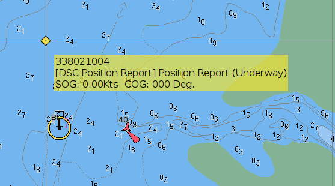
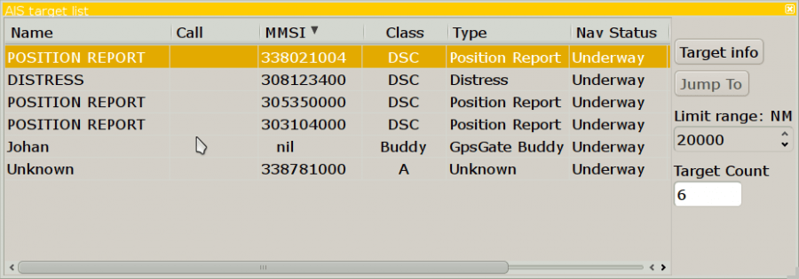

If DSC or GPSGate Buddy-messages are available in an incoming NMEA 0183 data stream, OpenCPN will show them with their own icons, and they will show in the “AIS Target list”. They are not a part of AIS, but are displayed the same way, for convenience.
DSC is used on all new VHF set (or should be!). More on Wikipedia. To use this feature, check that your VHF set outputs NMEA 0183, in a way that can be connected to OpenCPN.
GPSGate is a commercial GPS tracking and sharing service. GPSGate Buddy Tracking is part of that service**.
Make sure that Options–> AIS Targets –>“Play Sound on CPA/TCPA Alerts” box is ticked, otherwise the alarm sound (see below) will not be heard.
If OpenCPN receives a DSC Distress call, an alarm will be triggered, both visually and by sound.
A VHF/DSC distress call is treated in the same way as an AIS/SART call. Both should be treated as MAYDAY calls.
Two different types of alerts. DSC Distress alert, coming from a specific vessel, presumably by crew activating a switch on the transponder. These are occasionally seen as false alerts, for testing. For the second type look under AIS SART section. SART, which is a SearchAndRescueTransponder. The MMSI starts with 97….. and will have Class: SART. This might be from a PLB (and PLB-AIS) on man overboard, for instance. PLB AIS devices are under the AIS SART type.
Quick Reference
 DSC Station. Only the DSC message received. The position contains only degrees and minutes of Latitude and Longitude.
DSC Station. Only the DSC message received. The position contains only degrees and minutes of Latitude and Longitude.
 DSC Station. DSC and DSE messages received. The DSE message contains the missing decimals of minutes of Latitude and Longitude. The result is a much more accurate position.
DSC Station. DSC and DSE messages received. The DSE message contains the missing decimals of minutes of Latitude and Longitude. The result is a much more accurate position.
 DSC Station transmitting a distress signal. This is a “Mayday”.
DSC Station transmitting a distress signal. This is a “Mayday”.
 GpsGate Buddy target.
GpsGate Buddy target.
A normal DSC target, is someone using a dsc-capable VHF

Distress message via DSC, Digital selective Calling, from an unidentified AIS target.

A green Buddy target on an island.

The AIS Target List View 